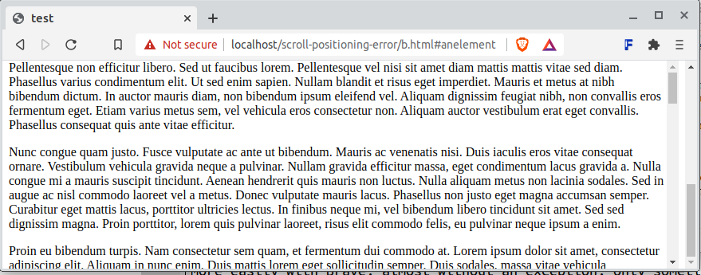
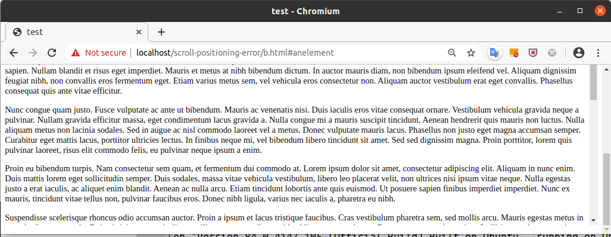
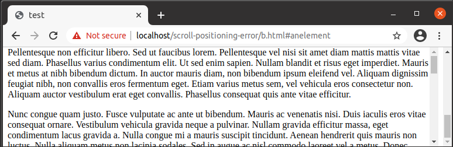

This is a report about a bug that causes the browser lose the proper position of the viewport upon a reload of a page. I suspect the problem is some kind of race condition between the scrollbars of the outer and the inner scroll area. Sometimes it is not desirable to have the outer scrollbar mandatorily hidden and this behavior becomes a problem.
Feel free to contact me at scrollbug@miettii.net for help on pinpointing the bug.
This page was created at 2021-03-17.
If, on a 100% height html page, we have an anchor to an element in a 100 % wrapper div with its overflow-y property set to auto or scroll, the scroll position is not preserved when reloading the page or going back and forth in the page history.
html, body, .wrapper {
height: 100%;
/* margin: 0; */
}
.wrapper {
overflow-y: scroll;
}
For some unknown reason the bug is reproducible only on the localhost, if the document does not contain the following script tag.
<script type="module"> </script>
The bug occurs also with "margin: 0" on the containers, but I think having the dual scrollbars visible gives a better initial hunch about the problem.
Resize this browser window to a reasonably small size to have the need for scrollbars in the next step.
Click this link to demo. See that the viewport is properly scrolled to the anchor.
The following steps A and B are alternative methods. The method B consists of two substeps.
Click the browser's Reload shortcut F5 for one second, release the key and then press F5 quickly again.
Click the browser's Back button (or select the corresponding shortcut on your keyboard) to return to the previous page.
Click the browser's Forward button (or select the corresponding shortcut on your keyboard) to go forward a page.
The bug is most easily reproduced with a site that resides on the localhost and with the Brave browser, almost without an exception. The bug occurs only sometimes with Chromium and very rarely with Chrome, best caught by using the Reload method. About the other method: If you go back and forth very quickly (on the keyboard), the bug occurs less often. That is easily recognizable with Brave.
The inner div is not scrolled down to the anchor at the bottom but stays at the top.
Brave:
Chromium:
Chrome:
I am consistently able to reproduce this with the following browsers.